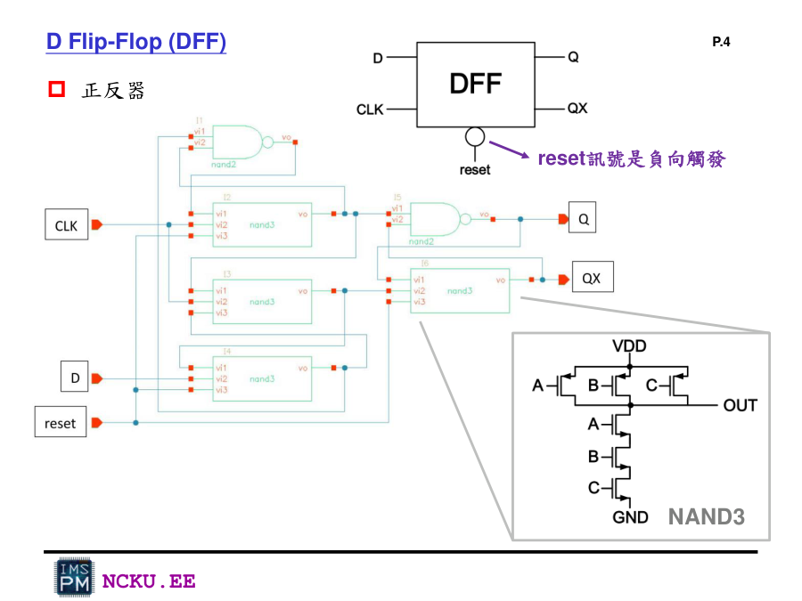
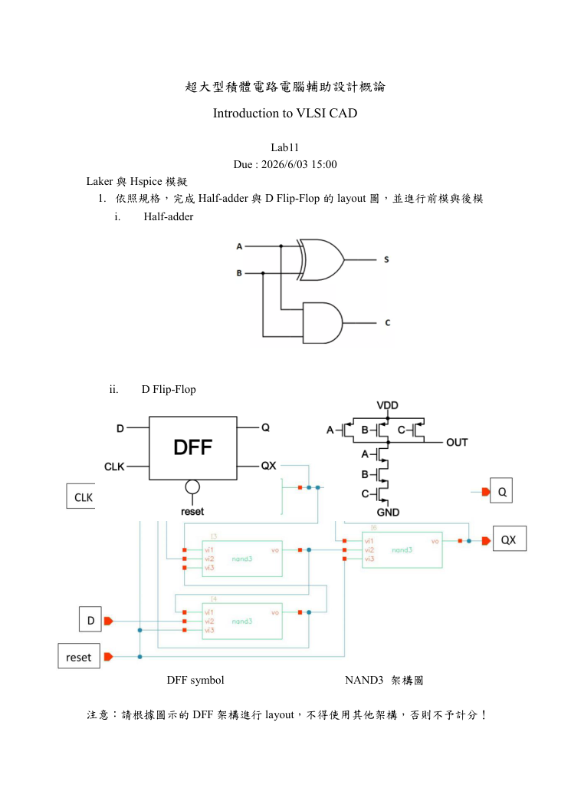

用 Laker 製作 DFF 的完整流程
從 DFF 架構、腳位、MOS row、Layer、routing 到 DRC/LVS/PEX/Post-sim。
指定 DFF 架構
DFF 必須依作業圖示 NAND3 架構進行 layout，reset 為負向觸發/低態有效。

Lab11：DFF 與 NAND3 架構

Lab11 homework：指定 DFF 架構
DFF 製作流程圖
Laker 製作 DFF 流程 SVG
DFF testbench 與腳位
*** DFF testbench ***
.INC 'DFF.spi' $ modify
.GLOBAL gnd vdd
.protect
.lib 'cic018.l' TT $modify
.unprotect
.op
.options accurate=1 post=1
.tran 0.1u 200u
.temp 25
xDFF clk D reset Q QX vdd gnd DFF $modify
v1 vdd 0v DC 1.8v
v2 gnd 0v DC 0v
v3 D 0v PULSE ( 0V 1.8V 5u 0.01u 0.01u 10u 15u )
v4 clk 0v PULSE ( 0V 1.8V 3u 0.01u 0.01u 5u 10u )
v5 reset 0v PULSE ( 0V 1.8V 0.01u 0.01u 0.01u 70u 100u )
.end| 腳位 | Layout Pin | 功能 | 重點 |
|---|---|---|---|
| clk | clk / CLK | 時脈 | 大小寫最好一致 |
| D | D | 資料輸入 | 接到指定 NAND3 網路 |
| reset | reset | 低態有效 reset | 波形需確認 |
| Q | Q | 正相輸出 | 不可與 QX 接反 |
| QX | QX | 反相輸出 | 應與 Q 互補 |
| vdd | vdd/VDD | 電源 | PMOS/well tap |
| gnd | gnd/GND | 接地 | NMOS/substrate tap |
實作步驟明細
準備 DFF.spi
建立 .subckt DFF clk D reset Q QX vdd gnd，先讓 presim 通過。
建立 .subckt DFF clk D reset Q QX vdd gnd，先讓 presim 通過。
建立 DFF layout cell
建立 DFF/layout，確認 technology file。
建立 DFF/layout，確認 technology file。
規劃 VDD/GND rail
上方 VDD、下方 GND，便於接 PMOS/NMOS body。
上方 VDD、下方 GND，便於接 PMOS/NMOS body。
配置 PMOS/NMOS row
PMOS 包 NWELL/PIMP；NMOS 包 NIMP。
PMOS 包 NWELL/PIMP；NMOS 包 NIMP。
建立 NAND2/NAND3
NAND3=3 PMOS 並聯 + 3 NMOS 串聯。
NAND3=3 PMOS 並聯 + 3 NMOS 串聯。
接點與走線
CONT 接 DIFF/PO1 到 ME1，再由 VIA 到 ME2/ME3/ME4。
CONT 接 DIFF/PO1 到 ME1，再由 VIA 到 ME2/ME3/ME4。
完成 D/CLK/reset/Q/QX
高層金屬可用於長距離 routing。
高層金屬可用於長距離 routing。
建立 Pin Text
名稱與 .sp/.spi 完全一致。
名稱與 .sp/.spi 完全一致。
驗證
DRC → LVS → PEX → Post-sim。
DRC → LVS → PEX → Post-sim。